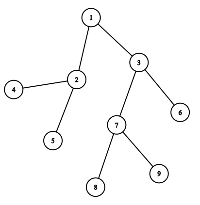

Dat je graf sa n čvorova.
Za dva data čvora u i v potrebno je odrediti najnižeg zajedničkog pretka
(eng. Lowest Common Ancestor - LCA).
Za primer sa slike:
u
v
LCA
5
6
1
8
6
3
8
9
7
4
9
1

Algoritam
Obilaskom stabla algoritmom pretrage u dubinu računaju se:
matrica predak[n][m], gde je predak[i][j] predak čvora i na rastojanju 2j;
nizovi ulaz[n] i izlaz[n], gde ulaz[i] i izlaz[i] predstavljaju vremena ulaska i izlaska iz podstabla čvora i.
Koristeći vremena ulaska i izlaska iz podstabla, proverava se da li je jedan čvor predak drugog.
Ukoliko jeste, taj čvor je traženi najniži zajednički predak i algoritam se zaustavlja.
Ukoliko nije, algoritam se nastavlja.
Pomoću matrice predak[n][m] i tehnike binarnog skoka nalazimo najvišeg pretka čvora u
koji nije predak čvora v i taj čvor je sada čvor u. Njegov roditelj tj. čvor
predak[u][0] je najniži zajednički predak čvorova u i v.